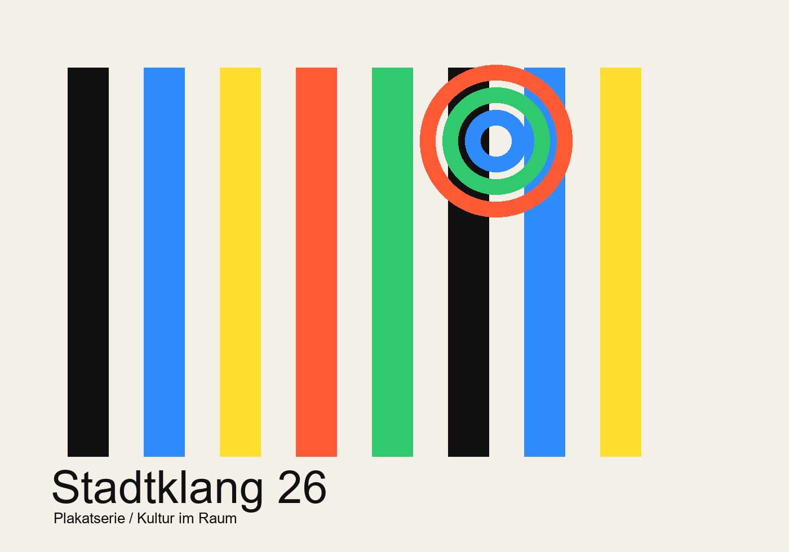
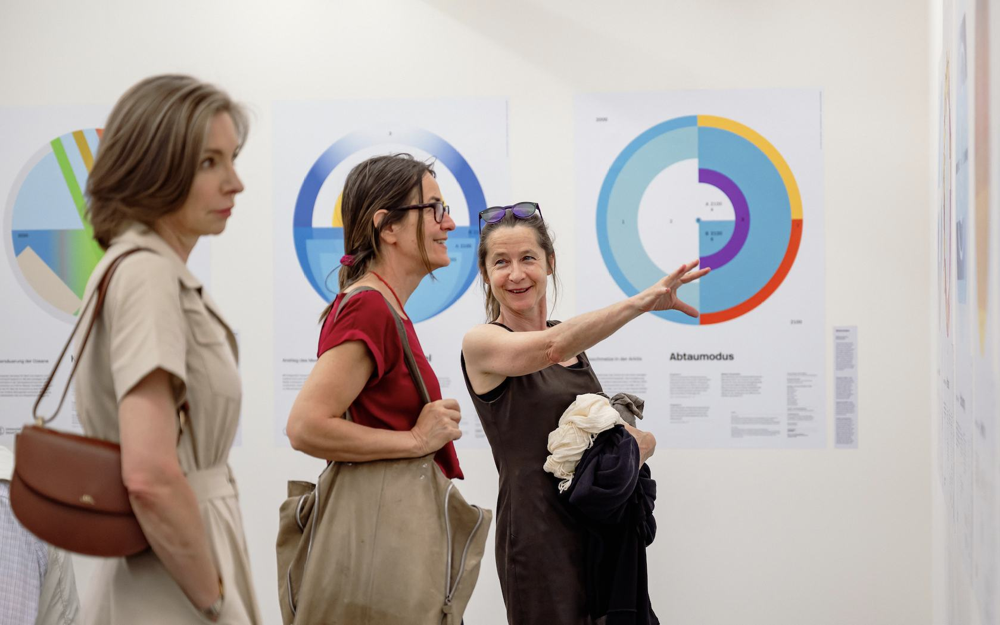
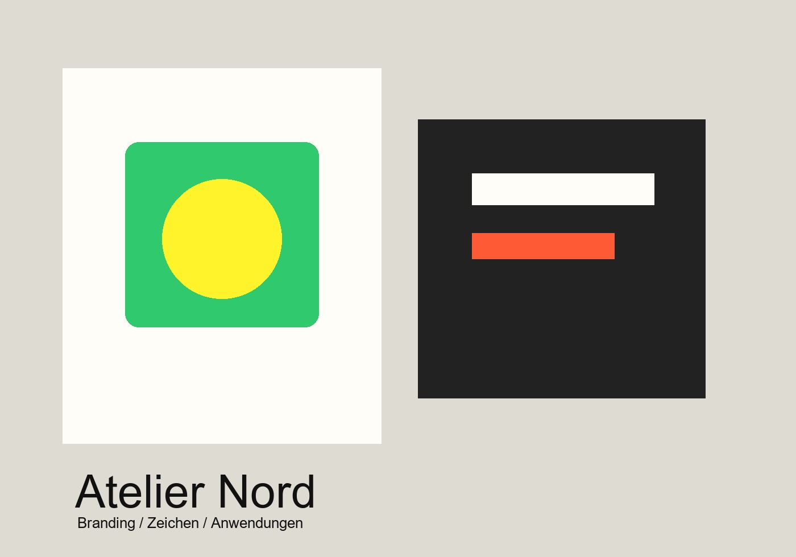
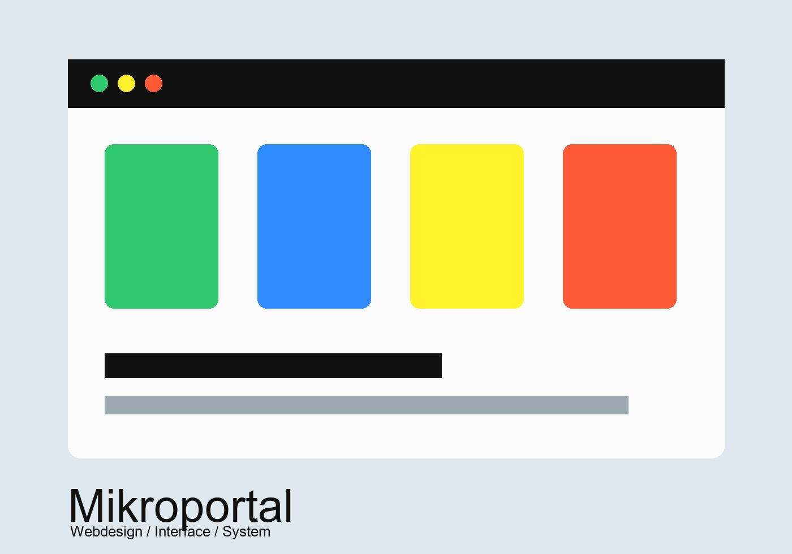
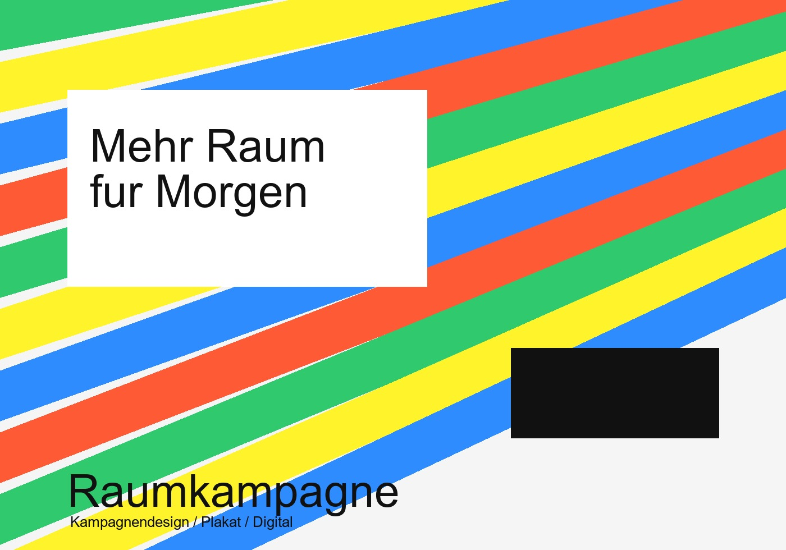
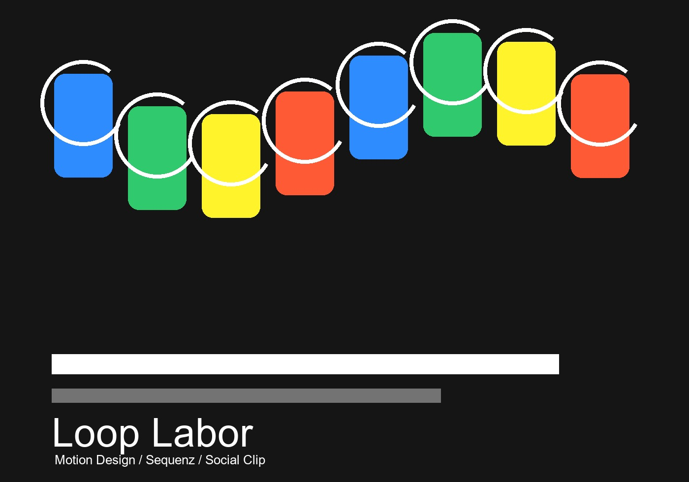
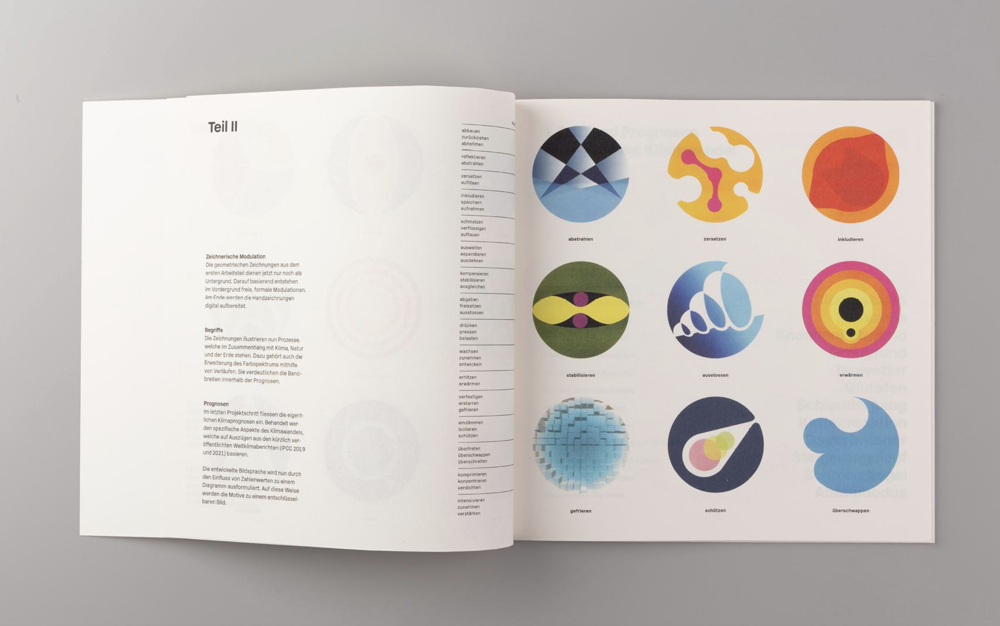

Stadtklang 26
Eine modulare Plakatserie für ein fiktives Kulturfestival mit starkem Rhythmus, Farbe und Fernwirkung.
Ciao! Ich bin Colin Gil Hägeli - freischaffender Grafikdesigner aus Luzern. Mein Fokus liegt auf starker Aufmerksamkeit, Branding und präziser visueller Gestaltung. Ich entwickle visuelle Lösungen für Plakate, Kampagnen, digitale Medien und Markenauftritte mit hohem Anspruch und klarer Wirkung.
Egal ob Kampagne, Firmenjubiläum oder neues Branding - ich verleihe jedem Projekt eine passende visuelle Form. Im Fokus steht nicht nur die Ästhetik, sondern die klare Kommunikation von Inhalten durch Typografie, Farbe und Form. Jedes Projekt wird individuell beurteilt und entsprechend umgesetzt. Hier findest du eine Auswahl meiner Arbeiten.

Erschreckend Schöne Bilder Klimaprognosen werden als klare, visuelle Zeichen im Ausstellungsraum lesbar gemacht.
Eine modulare Plakatserie für ein fiktives Kulturfestival mit starkem Rhythmus, Farbe und Fernwirkung.

Ein reduziertes Erscheinungsbild mit flexiblem Zeichen, klarer Typografie und markanten Anwendungen.

Ein kompaktes Interface-Konzept für ein digitales Archiv, gebaut aus wiederholbaren Modulen.

Eine fiktive städtische Kampagne, die Plakat, Social-Motive und digitale Teaser visuell verbindet.

Eine kurze Sequenzsprache aus Farbflächen, wiederkehrenden Frames und prägnanten Übergängen.

Ein Heftsystem mit ruhigem Satz, Bildstrecken und abstrahierten Zeichen für komplexe Inhalte.
Mit meiner Umsetzung, vom Tauwetter möchte ich unsere Aussichten aufs Klima prognostizieren. Diese katastrophale Situation, in der wir uns befinden, ist alarmierend. Wir, Meine Klasse, Rafael und Jiri haben mit Prof. Dr. Andreas Vieli die erschreckenden Klima Prognosen studiert und uns die Aufgabe gestellt diese unlesbaren Fakten visuell schön zu zeigen. In facto genauso wie es eigentlich nicht ist, aber die Schönheit der Plakate weckt ihre Aufmerksamkeit. Die Ästhetik vermittelt mit den klaren Formen und Verläufen genaue Prognosen und wann diese eintreffen werden. Mach dich auf was gefasst und setzt dich fürs Klima ein.